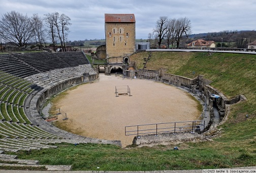

|
SUIZA ROMANA Los helvecios eran una tribu celta que poblaron lo que ahora se conoce como la Mittelland Suiza, así como el actual suroeste de Alemania . Las partes orientales de la actual Suiza estaban habitadas por los réticos. Hay teorías en el sentido de que los réticos eran descendientes de los etruscos.
También destacamos la ruta de la vía romana que une Ginebra con Avenches. En Avenches destaca su anfiteatro romano y villa galo-romana de Vallon.
 En Ingerhausen destacan los vestigios de un campamento romano. El vicus romano de Eschenz. En Martigny destaca su anfiteatro romano, las termas y el templo de Mitra. En Lausana destaca su museo romano, su vicus y el paseo arqueológico de Vidy con su foro, basílica y puerto. En Nyon encontramos la basílica del foro, el anfiteatro y su museo romano. La villa romana de Orbe con sus mosaicos. En Vindonissa destaca el anfiteatro, su parque temático y el museo. En Enero de 2022, arqueólogos suizos descubren un anfiteatro romano, hallaron los restos a las afueras de la ciudad de Basilea. Una muralla de forma ovalada de 50 metros de longitud y 40 de anchura. los restos se encuentran en un antiguo asentamiento romano, situado a orillas del río Rin en la frontera norte del Imperio Romano, conocido como Augusta Raurica.
En septiembre de 2024, tras años de
excavaciones, los arqueólogos encuentran un antiguo campamento
militar romano a más de 2.000 metros de altura en Alpes suizos, en el
área de Colm la Runga. No sólo descubrieron las zanjas y un muro del
campamento, sino que también hallaron balas de honda de plomo con el
sello de la 3ª Legión romana. La fortaleza permaneció intacta durante
dos milenios.
|